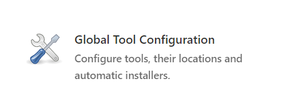
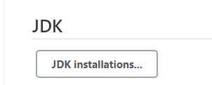
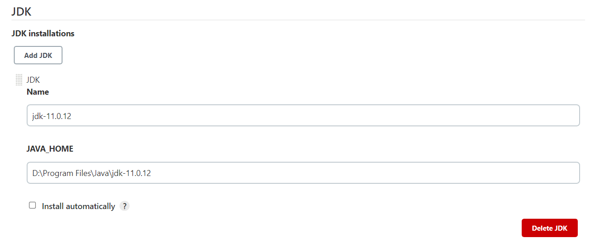
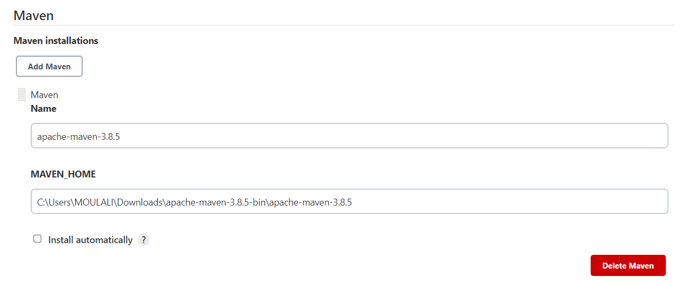
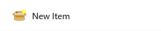
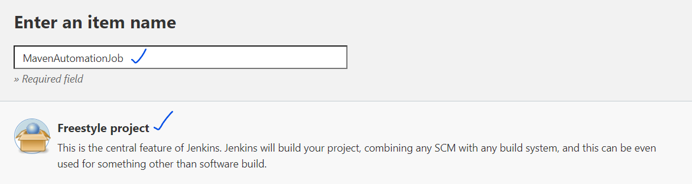
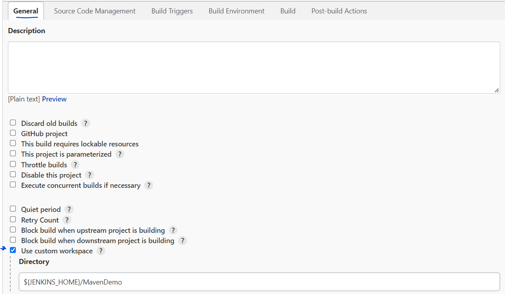
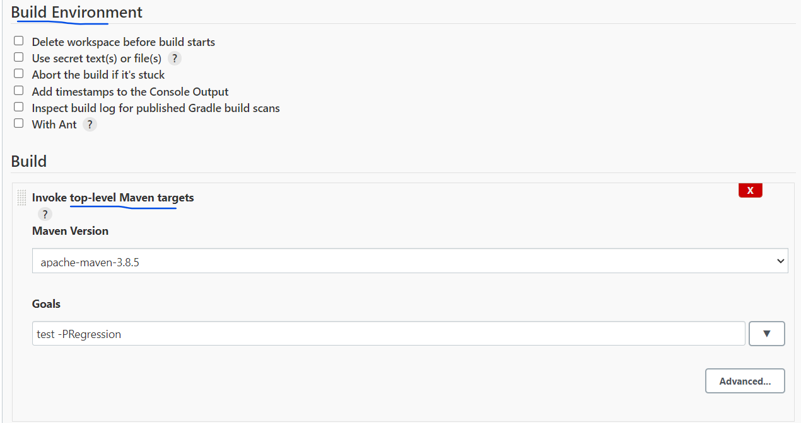
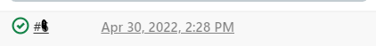
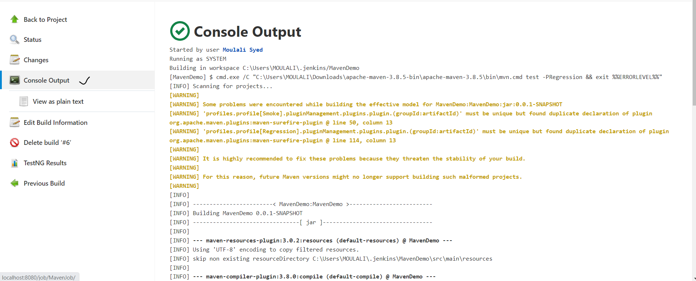

In order to run our testcases daily at scheduled time , we can use jenkins in our automation project
Go to Jenkins download link Jenkins and download jenkins.war file based on your OS
Once downloaded , go to command prompt ,go to jenkins.war file location using : cd jenkins.warDirectoryPath
Enter the command : java -jar jenkins.war -httpPort=8080 and press enter
We will get a message as below
Jenkins initial setup is required. An admin user has been created and a password generated. Please use the following password to proceed to installation: 47d3ed1820c84612a14091e59b9806bf
This may also be found at: C:\Users\MOULALI\.jenkins\secrets\initialAdminPassword
Now go to browser and open localhost 8080 , give the admin password which ever u get as password as in above step , and click on custom download
Create admin user providing username ,password ,fullName , emailId
Now we can use jenkins at http://localhost:8080/
Once jenkins is configured we can see the dashboard page , click on Manage Jenkins
Click on Global Tool Configuration
Click on JDK Installations
Provide the java path , we used for java configuration JAVA_HOME
Scroll down , Click on Maven Installations and provide maven path
Click on Save
Lets copy our selenium project and place in the jenkins home directory
C:\Users\MOULALI\.jenkins - paste project in this path now jenkins will check it is present in jenkins home directory
Lets see how we can run our code present in our local machine
Come to Jenkins dashboard , click on New Item
provide any name to this job as MavenJob - Select FreeStyleProject and click on OK
In general tab , click on advanced and check mark Use custom Workspace and provide the project path , present in Jenkins Home Directory
Now go to Build Environment and Click on Invoke top level maven target and provide maven goal based on maven profile
Click on Save. Click on Build Now
Click on link from the Build History
Now go to Console Output and check the results
